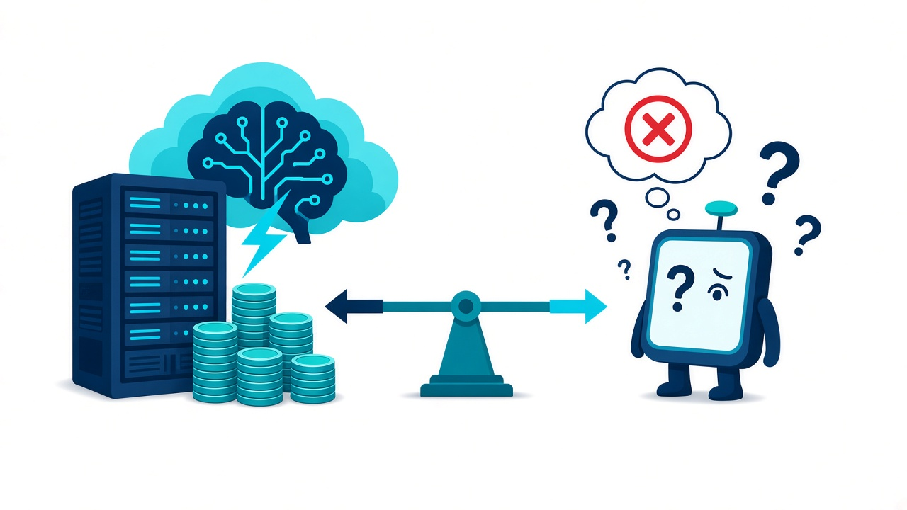
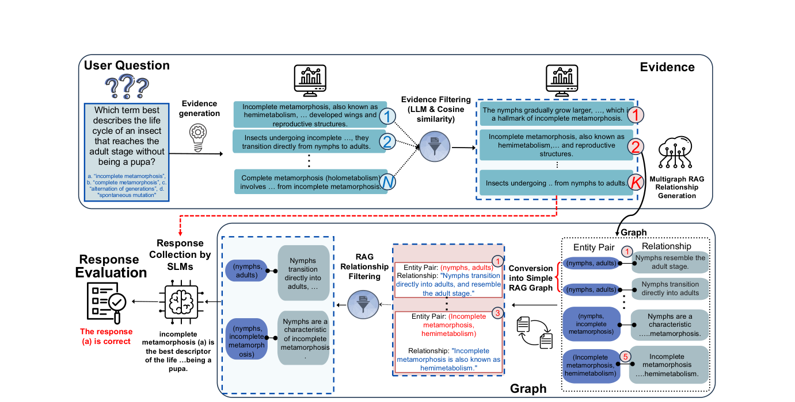
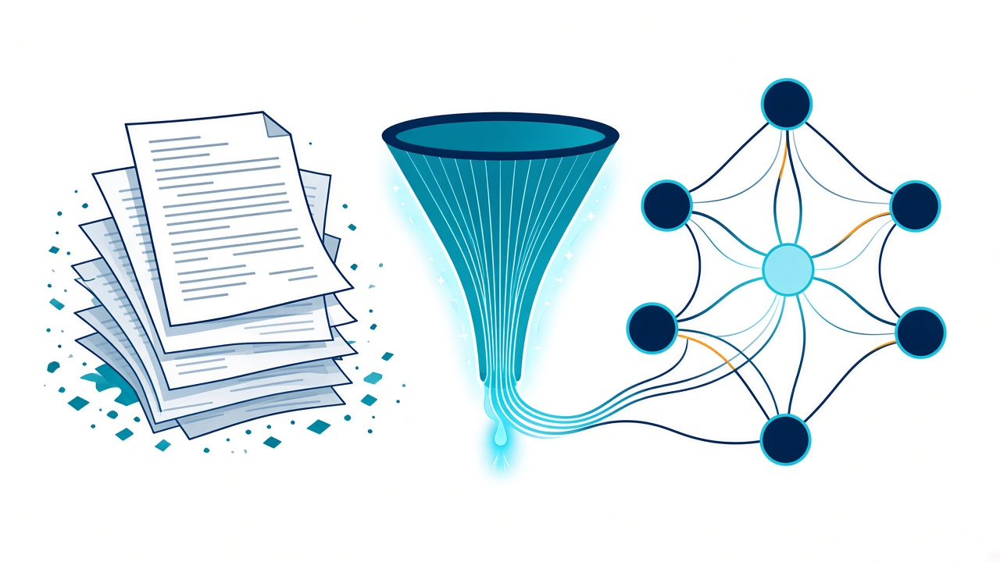
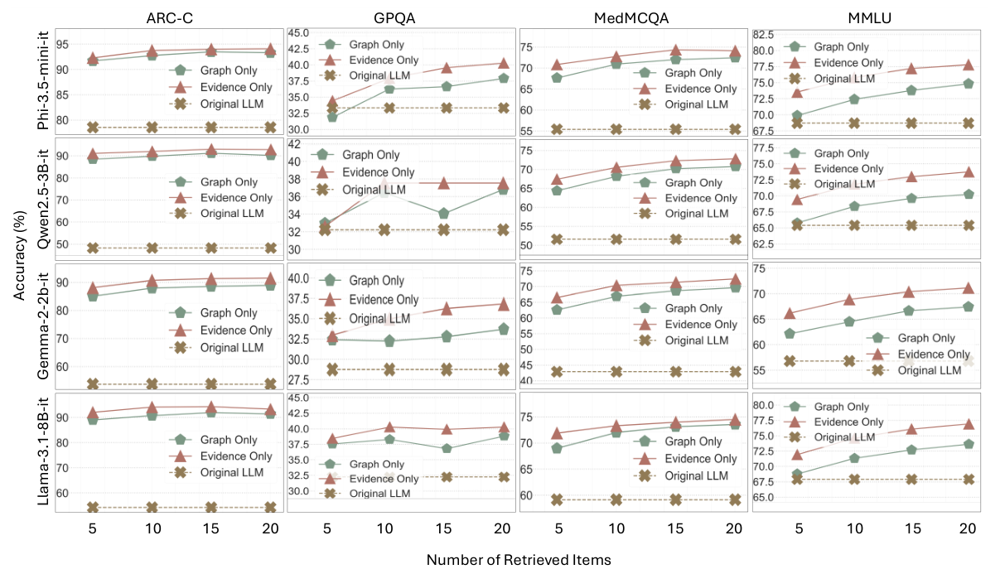

DRAG: Distilling RAG
for SLMs from LLMs
Chắt lọc tri thức RAG từ mô hình lớn sang mô hình nhỏ bằng chứng cứ xếp hạng và đồ thị tri thức — giảm ảo giác, tăng độ chính xác, bảo vệ riêng tư.
Nội dung trình bày
Bảy phần, đi đúng mạch của bài báo
01 Đặt vấn đề
RAG mạnh nhưng đắt — SLM rẻ nhưng ảo giác
đúng sự thật
phải duy trì kho tri thức lớn
câu nghe hợp lý mà sai

Ví dụ ảo giác (Phụ lục I của bài)
Khoảng trống nghiên cứu
- Khung RAG lớn được thiết kế cho LLM cloud, khó đưa về thiết bị yếu
- Ngay cả RAG tiên tiến vẫn còn hallucination; câu trả lời sai của người dùng có thể “làm bẩn” kho RAG
- Cần cách truyền năng lực RAG sang SLM mà không tốn kém
01 Kiến thức nền · Mục 3.1
RAG tách bài toán thành truy xuất × sinh câu
Naive RAG — truy xuất tài liệu d từ kho D
Graph RAG — truy xuất đồ thị con z ⊆ G
DRAG giao phần truy xuất (θr) cho LLM thầy trên cloud, tức là thầy sinh evidence và đồ thị; phần sinh câu (θg) do SLM trò đảm nhận ngay trên thiết bị. Cả hai dạng ngữ cảnh (văn bản d và đồ thị z) đều được dùng.
01 Công trình liên quan · Mục 2
DRAG đứng ở giao điểm của RAG, Graph RAG và Distillation
| Phương pháp | Ý tưởng chính | Fine-tune? | Hướng tới SLM? | Dùng đồ thị? |
|---|---|---|---|---|
| RAG (Lewis 2020) | Dense retriever + seq2seq generator | Có | Không | Không |
| Self-RAG / CRAG | Tự phản tư khi truy xuất / sửa lỗi tài liệu truy xuất | Có | Không | Không |
| SimRAG | Tự cải thiện để thích nghi miền chuyên biệt | Có | Không | Không |
| Graph RAG (Edge 2024) | Đồ thị thực thể từ kho văn bản → câu hỏi toàn cục | Không | Không | Có |
| MiniRAG (2025) | RAG cực đơn giản cho mô hình nhỏ | Không | Có | Có |
| LLMQuoter (2025) | LoRA trên 15k mẫu HotpotQA, “trích dẫn trước, trả lời sau” | Có | Có | Không |
| DRAG (bài này) | LLM thầy sinh evidence xếp hạng + đồ thị cho SLM trò | Không | Có | Có |
02 Ý tưởng cốt lõi
Thầy chắt lọc ngữ cảnh — Trò tự trả lời tại chỗ
① LLM = retriever mạnh hơn
Theo tác giả, một LLM được huấn luyện tốt là bộ truy xuất mạnh và hiệu quả hơn “query encoder + document index” cho SLM.
② Thầy không làm hộ
Teacher chỉ đưa evidence và đồ thị; prompt có câu “Do not give the answer away directly”.
③ Không fine-tune
Chỉ cần prompt. Trò có thể là mô hình chuyên miền, chạy cục bộ, nhận câu hỏi đã ẩn danh.
02 Khác gì RAG truyền thống?
Thay kho tài liệu + bộ truy xuất bằng một LLM thầy
| Khía cạnh | RAG truyền thống | DRAG |
|---|---|---|
| Nguồn tri thức | Kho tài liệu ngoài, phải cập nhật & lập chỉ mục | Tri thức nội tại của LLM thầy |
| Bộ truy xuất | Query encoder + document index | Prompt LLM sinh N evidence |
| Lọc ngữ cảnh | Điểm tương đồng vector (top-k) | Cosine + LLM chấm hạng (cộng đều) |
| Ngữ cảnh cho mô hình | Đoạn văn thô, dài | Evidence ngắn ± bộ ba (a, b, r) |
| Huấn luyện | Nhiều biến thể cần fine-tune | Không fine-tune |
| Riêng tư | Gửi nguyên câu hỏi lên cloud | SLM gỡ PII trước khi gửi |
03 Kiến trúc tổng thể · Hình 1 của bài
Một câu hỏi đi qua 4 bước trước khi SLM trả lời

Hình 1 (bài báo) — bấm vào hình để phóng to
① Evidence generation
LLM sinh N đoạn chứng cứ
② Evidence filtering
LLM + cosine → giữ K
③ Multigraph → simple graph
Trích (a, b, r), lọc, gộp cạnh
④ SLM response
Trả lời & đánh giá: “(a) is correct”
03 Algorithm 1 · DRAG Framework
Toàn bộ khung chỉ gồm 10 dòng giả mã
| Ký hiệu | Ý nghĩa |
|---|---|
| N | Số evidence thầy sinh ra |
| K | Số evidence / quan hệ giữ lại (5, 10, 15, 20) |
| ei, q | Vector nhúng (sentence-transformers) |
| V, E | Tập thực thể, tập quan hệ |
| context | Evidence, đồ thị, hoặc cả hai |
03 Bước 1 – 2 · Sinh và xếp hạng chứng cứ
Sinh N chứng cứ → chấm điểm kép → giữ top K
① Prompt sinh evidence (Phụ lục F)
User: Generate N evidences that pertain to answering the following question: {q}
D: N evidence
Điểm kép
Dfiltered
Điểm số minh họa — bài báo không công bố điểm từng evidence
03 Bước 3 · Graph RAG Generation · Phụ lục H
Evidence dài → multigraph → simple graph gọn

Trích bộ ba
Ri = {(a, b, r)}: nút là thực thể, cạnh mang nhãn quan hệ. Xếp hạng giống bước 2 → giữ top K.
Gộp cạnh bằng prompt
“Combine the provided statements into one summarized statement. Be concise without losing any information.”
Đánh đổi
Mất một phần thông tin so với văn bản gốc, nhưng ít token hơn ~18% → SLM suy luận nhẹ hơn.
03 Bước 4 · SLM Evaluation · Ví dụ Phụ lục I
Cùng một SLM: sai khi trả lời “chay”, đúng khi có ngữ cảnh DRAG
a. Incomplete metamorphosis · b. Complete metamorphosis · c. Alternation of generations · d. Spontaneous mutation
Ngữ cảnh SLM nhận được
EVIDENCE ĐÃ LỌC
- Nymphs lớn dần, lột xác nhiều lần cho đến khi trưởng thành — dấu hiệu của incomplete metamorphosis.
- Incomplete metamorphosis (hemimetabolism): con non giống con trưởng thành nhưng chưa có cánh hoàn chỉnh.
- Côn trùng biến thái không hoàn toàn không có giai đoạn nhộng; nymph chuyển thẳng thành adult.
QUAN HỆ ĐỒ THỊ ĐÃ LỌC
04 Thiết lập thực nghiệm · Mục 4.1 + Phụ lục A
5 thầy trên cloud · 7 trò 2B–9B · 6 benchmark + 1 bộ riêng tư
Teacher LLMs
Student SLMs
| Benchmark | Nội dung | Loại |
|---|---|---|
| ARC-Challenge | Khoa học tự nhiên; câu mà truy xuất & đồng xuất hiện đều thất bại | MCQA |
| MedMCQA | >194k câu thi y khoa, 21 môn | MCQA |
| GPQA | 448 câu chuyên gia; tiến sĩ chỉ đạt 65% dù có web | MCQA |
| MMLU | 57 lĩnh vực đa dạng | MCQA |
| Open-LLM-Leaderboard | Câu hỏi mở, tránh thiên lệch chọn đáp án | Open QA |
| AVERITEC | Kiểm chứng tuyên bố: ủng hộ / bác bỏ / thiếu chứng cứ | Fact check |
| Privacy benchmark | 5.000 câu MMLU + PII giả do GPT-4o chèn vào | Mới |
05 Kết quả chính · Bảng 1
DRAG vượt các khung RAG trước đó tới +27.7%
| Khung | Backbone | MedMCQA | MMLU | ARC-C |
|---|---|---|---|---|
| Self-RAG | SelfRAG-LLaMA-2-7B | – | – | 67.3 |
| CRAG | SelfRAG-LLaMA-2-7B | – | – | 68.6 |
| DRAG | LLaMA-2-7B | 72.4 | 71.2 | 86.2↑17.6 |
| SimRAG | Llama-3.1-8B | – | 67.5 | 81.4 |
| DRAG | Llama-3.1-8B | 74.2 | 75.7↑8.2 | 93.1↑11.7 |
| MiniRAG | GLM-edge-1.5B | 52.1 | 47.0 | 62.3 |
| DRAG | GLM-edge-1.5B | 56.9↑4.8 | 69.0↑22.0 | 90.0↑27.7 |
| MiniRAG | Llama-3.2-3B | 52.7 | 69.1 | 65.3 |
| DRAG | Llama-3.2-3B | 73.6↑20.9 | 74.4↑5.3 | 93.0↑27.7 |
“↑” = mức tăng so với phương pháp khác dùng cùng backbone và cấu hình suy luận. Bảng rút gọn; 3 cặp MiniRAG/DRAG còn lại ở slide sau.
05 Cùng SLM, đổi khung RAG · Bảng 1
Trên cả 5 SLM, DRAG luôn cao hơn MiniRAG
05 Ablation · Số evidence K · Bảng 2, 8, 10, 11, 17 + Hình 2
K ≈ 15 là điểm cân bằng chi phí – độ chính xác

Hình 2 (bài báo) — bấm để phóng to
- Ít hơn 15: thiếu tri thức
- Nhiều hơn 15: dư thừa, nhiễu → giảm nhẹ (N = 30–50 không cải thiện)
- Evidence only thường cao nhất; combined ≈ evidence nhưng tốn suy luận hơn
05 Ablation · Chọn thầy nào? · Bảng 3 + Bảng 9
Thầy giỏi nhất chưa chắc là thầy dạy tốt nhất
MedMCQA — trung bình 7 SLM, cấu hình Evidence (K = 15)
Tính từ Bảng 3 của bài báo
| Teacher | ARC-C | MedMCQA | GPQA | MMLU |
|---|---|---|---|---|
| GPT-4o | 96.7 | 77.0 | 53.6 | 88.7 |
| Claude 3.5 | 96.4 | 76.1 | 59.4 | 88.7 |
| DeepSeek-V3 | 95.3 | 74.3 | 59.1 | 87.1 |
| LLaMA-3.3-70B | 95.1 | 72.7 | 50.5 | 86.0 |
| Gemini 1.5 Flash | 90.3 | 69.9 | 39.5 | 78.9 |
Trò giỏi nhất chỉ kém GPT-4o khoảng 2.0–2.5% trên ARC-C và MedMCQA.
05 Evidence vs Graph · Bảng 5, 6, 7
Evidence chính xác hơn, Graph rẻ hơn
Bảng 5 — Token mỗi mục
↓ 18.1% token
Tổng: 29.7M vs 24.3M token
Bảng 6 — Open-LLM Leaderboard (thầy GPT-4o-mini)
| SLM | Gốc | Graph | Evid. | Comb. |
|---|---|---|---|---|
| Phi-3.5-mini | 35.26 | 38.22 | 40.13 | 39.84 |
| Qwen2.5-3B | 32.59 | 36.01 | 37.23 | 37.50 |
| Llama-3.1-8B | 45.07 | 49.13 | 50.26 | 51.73 |
| Qwen2.5-7B | 44.67 | 48.73 | 52.36 | 52.66 |
| Gemma-2-9B | 46.44 | 49.12 | 53.45 | 53.19 |
Rút gọn 5/7 SLM. Mọi cấu hình đều tăng 2.7–8.0 điểm.
Bảng 7 — AVERITEC
BLOOM-7B: 26 → 32.43 (evidence)
06 Bảo vệ quyền riêng tư · Mục 3.3, 4.7 + Phụ lục G
SLM gỡ PII cục bộ trước khi hỏi thầy trên cloud
Ví dụ 1 (Phụ lục I.1)
07 Đóng góp & hạn chế
Ba đóng góp chính — và những giới hạn cần lưu ý
Đóng góp
- Khung chưng cất RAG dựa trên evidence + đồ thị tri thức, không fine-tune, giảm ảo giác cho SLM
- Benchmark rò rỉ riêng tư + cơ chế SLM ẩn danh câu hỏi trước khi gọi cloud
- Đánh giá rộng: 5 teacher, 7+ student, MCQA / Open QA / fact-check; vượt MiniRAG tới 27.7%
Hạn chế (tác giả tự nêu)
- Mất tri thức ngầm, tinh tế của thầy — nhất là bài toán mở, sáng tạo
- Chi phí chưng cất lớn: mỗi câu hỏi phải sinh + xếp hạng evidence, dựng đồ thị
- Nguy cơ lộ đáp án trong evidence dù prompt đã cấm
- Thiên lệch của thầy / đồ thị có thể truyền sang trò
Góc nhìn phản biện của người trình bày
Mức “+26.8% so với Self-RAG” so 94.1% của Phi-3.5 với 67.3% của SelfRAG-LLaMA-2-7B — khác backbone. So cùng họ LLaMA-2-7B, mức tăng là +18.9 (86.2 vs 67.3). Ngoài ra, thầy vẫn cần gọi cloud cho mỗi câu hỏi, nên DRAG giảm chi phí suy luận phía SLM chứ không bỏ được LLM.
07 Đề xuất cải tiến · Đọc mã nguồn VILA-Lab/DRAG MỚI
Cải tiến ①: bước xếp hạng trong code có thể đang đảo chiều
| Evidence | cos | Hạng hiện tại | Hạng đúng |
|---|---|---|---|
| d₁ (rất liên quan) | 0.82 | 3 | 1 |
| d₂ | 0.64 | 2 | 2 |
| d₃ (lạc đề) | 0.21 | 1 | 3 |
- rankLLM trong code chỉ là thứ tự LLM tự liệt kê evidence, không phải một lần chấm điểm riêng
- Cộng hạng thô (không phải điểm như công thức 4) → nên dùng RRF hoặc điểm chuẩn hóa có trọng số α
- Thêm tín hiệu thứ ba: cross-encoder reranker chạy cục bộ (vd. bge-reranker)
07 Đề xuất cải tiến · Kiến trúc DRAG+ MỚI
DRAG+: thêm 6 cải tiến nhắm thẳng vào các hạn chế
1Rerank RRF + cross-encoder
Sửa chiều sắp xếp; hợp nhất 3 thứ hạng bằng RRF thay vì cộng hạng thô.
2Cổng tự tin
Phi-3.5 đã đúng 78.6% ARC-C khi không có ngữ cảnh → nhiều câu không cần gọi thầy.
3Cache ngữ nghĩa
Câu hỏi gần giống (cos ≥ θ) dùng lại evidence/đồ thị đã có → giảm chi phí chưng cất.
4K thích nghi
Dừng lấy evidence khi điểm RRF tụt mạnh hoặc chạm ngân sách token, thay vì luôn K = 15.
5Lọc rò rỉ đáp án
Loại evidence chứa nguyên văn phương án hoặc suy ra trực tiếp đáp án (NLI), và báo cáo tỉ lệ rò rỉ.
6Lọc PII 2 lớp
NER/regex bắt email, SĐT chắc chắn; SLM viết lại phần còn lại → giảm 649 PII còn sót.
07 Đề xuất cải tiến · Kế hoạch kiểm chứng MỚI
Mỗi cải tiến gắn với một hạn chế và một chỉ số đo
| Cải tiến | Giải quyết | Kỳ vọng | Chỉ số đo |
|---|---|---|---|
| 1RRF + cross-encoder | Xếp hạng đảo chiều, cộng hạng thô | Evidence đúng trọng tâm hơn ở cùng K | Accuracy, Recall@K của evidence |
| 2Cổng tự tin | Chi phí gọi cloud cho mọi câu | Ít lời gọi thầy, accuracy gần như giữ nguyên | % câu gọi cloud, accuracy, độ trễ |
| 3Cache ngữ nghĩa | Chi phí chưng cất (hạn chế 2) | Câu hỏi lặp không tốn thêm token thầy | Cache hit rate, token thầy / câu |
| 4K thích nghi | K cố định gây thiếu hoặc nhiễu | Ít token hơn ở câu dễ, đủ tri thức ở câu khó | Token SLM / câu, accuracy |
| 5Lọc rò rỉ đáp án | Rò rỉ đáp án (hạn chế 3) | Kết quả phản ánh đúng năng lực trò | Tỉ lệ rò rỉ, accuracy trước/sau lọc |
| 6Lọc PII 2 lớp | Còn 649 / 15.090 PII sót | Ít PII sót hơn, giữ nghĩa câu hỏi | PII còn lại theo loại, accuracy |
Baseline
DRAG gốc: thầy GPT-4o, evidence-only, K = 15 — dùng lại script 1→6 trong repo.
Ablation
Bật/tắt từng cải tiến ①–⑥ để tách đóng góp riêng; báo cáo cả accuracy lẫn chi phí.
Dữ liệu
ARC-C, MedMCQA (MCQA) + Privacy benchmark; 2 SLM: Gemma-2-2B và Llama-3.1-8B.
Kết luận
DRAG đưa năng lực RAG vào SLM: chính xác hơn, nhẹ hơn, riêng tư hơn
Cảm ơn thầy cô và các bạn đã lắng nghe · Xin nhận câu hỏi